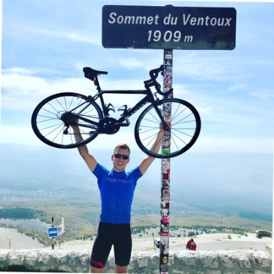
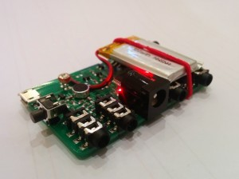
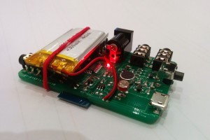

Sr SWE @ ClickHouse, building Observability kit at enormous scale 🧪
Email: rorycr🕸️icloud.com / rory🕸️clickhouse.com
Linkedin: https://www.linkedin.com/in/rory-crispin/
Github https://github.com/RoryCrispin
Use the plaintext tools which you already know inside out to interact with your clusters.
kubefs makes your clusters available as a tree of plaintext files.
kubectl --context majestic-gnat --namespace flycatcher get po nginx-1 -oyaml becomes cat /tmp/kubefs/majestic-gnat/namespaces/flycatcher/pods/nginx-1/def.yamlYou can exec commands on containers too;
kubectl --context majestic-gnat --namespace flycatcher exec nginx-1 --container nginx-ingress -- cat blah becomes echo "cat blah" >> /tmp/kubefs/majestic-gnat/namespaces/flycatcher/pods/nginx-1/containers/nginx-ingressBut it's true power comes when you use your existing tools:
ediff /tmp/kubefs/majestic-gnat/namespaces/flycatcher/pods/nginx-1/def.yaml /tmp/kubefs/majestic-gnat/namespaces/flycatcher/pods/nginx-2/def.yaml
Abstract: In this project, we explore the concept of playing Texas Hold 'em Poker without a trusted authority by using a decentralised Peer to Peer network model. We consider the applications of such a protocol in fighting internet censorship while avoiding funding corrupt casinos, and the resultant challenges involving the cryptographic protocol, the lack of trust in such a decentralised system and in the implementation of poker. The final product is a toolkit for peer to peer card games, with an implementation of Texas Hold 'em poker to demonstrate it's functionality.
Connect4RESTful was a project to implement Connect4 with Minmax AI written in literate Haskell. It's compiled to wasm and playable in the browser.
/$$$$$$ /$$$$$$ /$$ /$$ /$$ /$$ /$$$$$$$$ /$$$$$$ /$$$$$$$$ /$$ /$$
/$$__ $$ /$$__ $$| $$$ | $$| $$$ | $$| $$_____/ /$$__ $$|__ $$__/ | $$ | $$
| $$ \__/| $$ \ $$| $$$$| $$| $$$$| $$| $$ | $$ \__/ | $$ | $$ | $$
| $$ | $$ | $$| $$ $$ $$| $$ $$ $$| $$$$$ | $$ | $$ | $$$$$$$$
| $$ | $$ | $$| $$ $$$$| $$ $$$$| $$__/ | $$ | $$ |_____ $$
| $$ $$| $$ | $$| $$\ $$$| $$\ $$$| $$ | $$ $$ | $$ | $$
| $$$$$$/| $$$$$$/| $$ \ $$| $$ \ $$| $$$$$$$$| $$$$$$/ | $$ | $$
\______/ \______/ |__/ \__/|__/ \__/|________/ \______/ |__/ |__/
---
*Declarations*
---
The length of a winning combo is declared as a constant here
> c_win = 4
Boards are represented as O,X,B where O/X are players and B is 'Blank'
> data PlayerValue = O | B | X deriving (Ord, Eq,Show, Generic)
> instance ToJSON PlayerValue
> instance FromJSON PlayerValue
...
ToroCam is a camera control system, which gives you unparallelled control over your SLR though an open source app and a small, Arduino compatible board. Unlike competing solutions, your phone is never tethered to the camera when using toroCam as a high performance dedicated board connects to the camera directly and the phone is only responsible for sending instructions on which triggers the board should use - allowing the system to react in microseconds to sensor values, far quicker than any dedicated mobile based solution which allows us to take precisely timed photos such as the following:
The custom made toroCam boards look like this: 